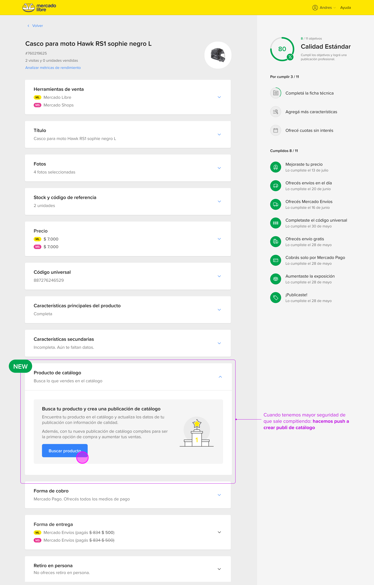
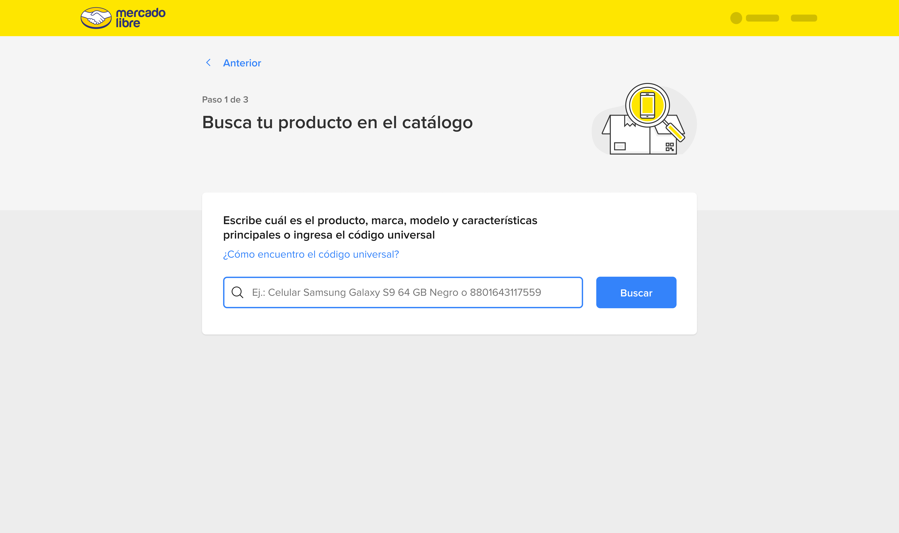
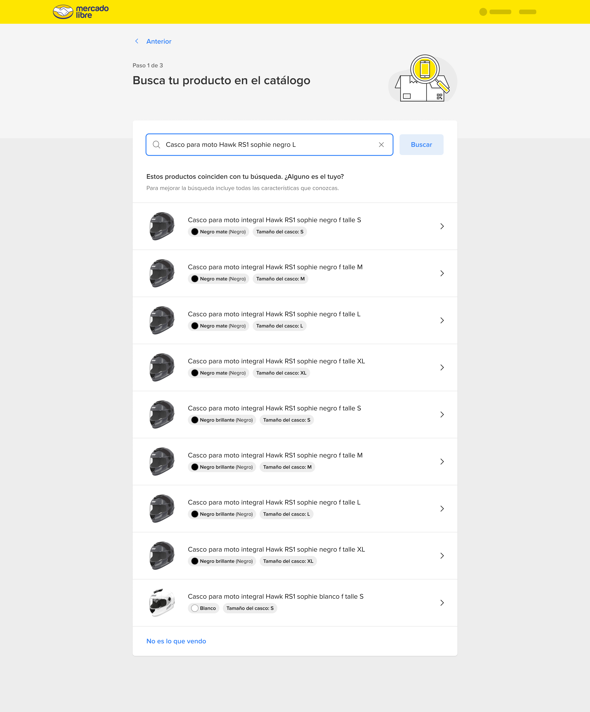
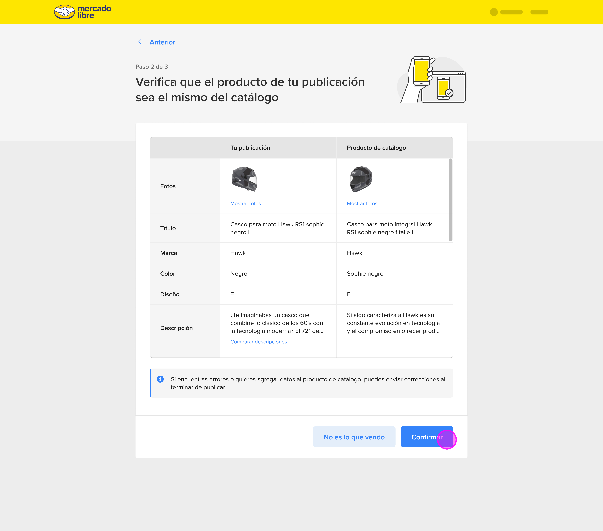
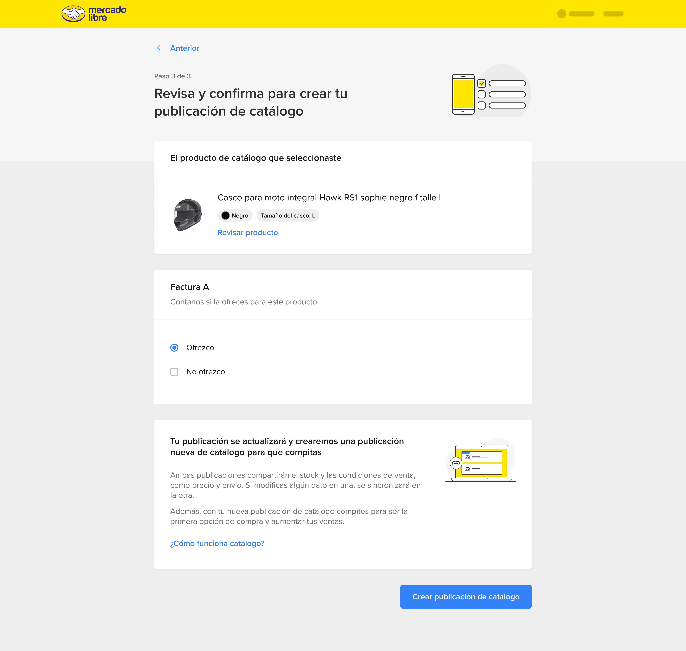
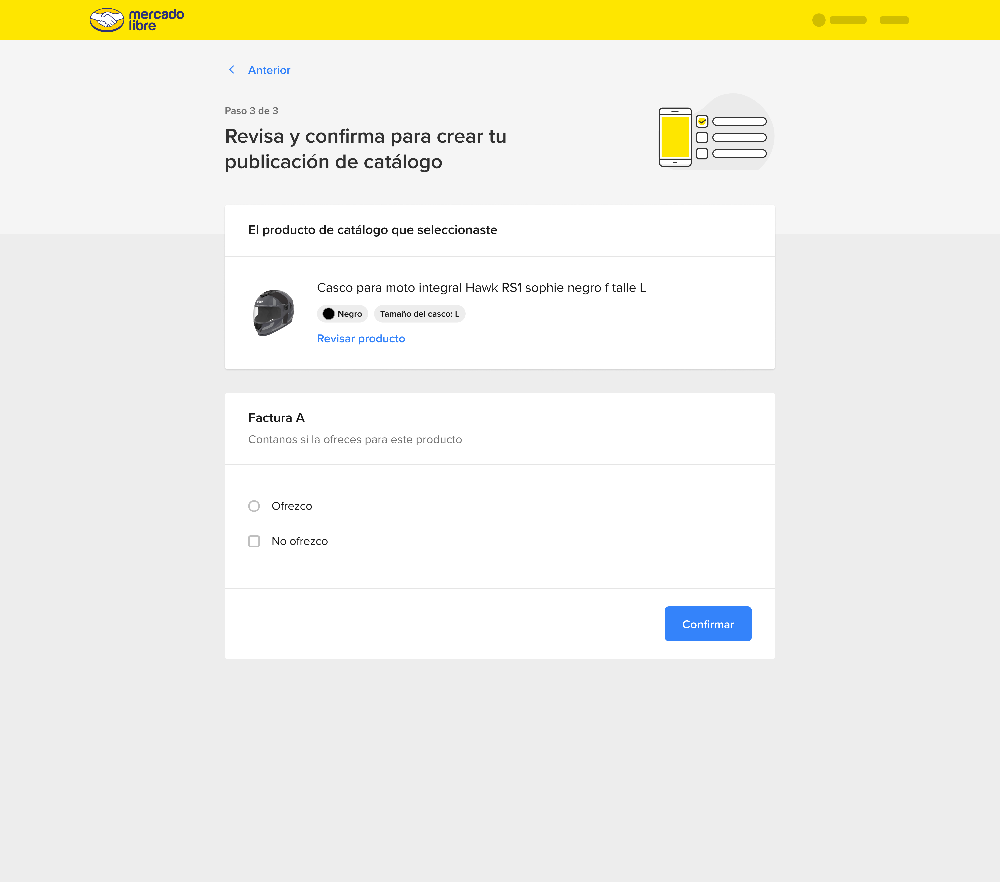
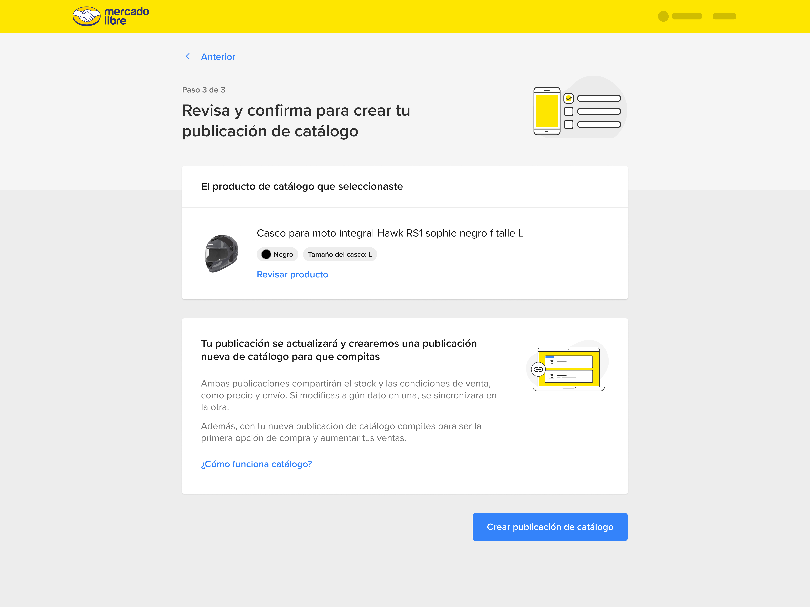
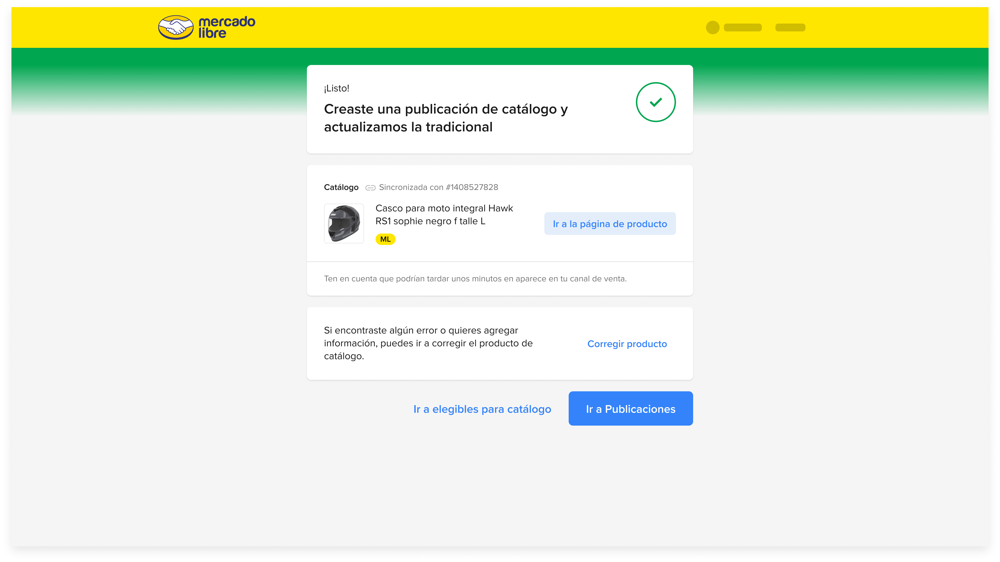
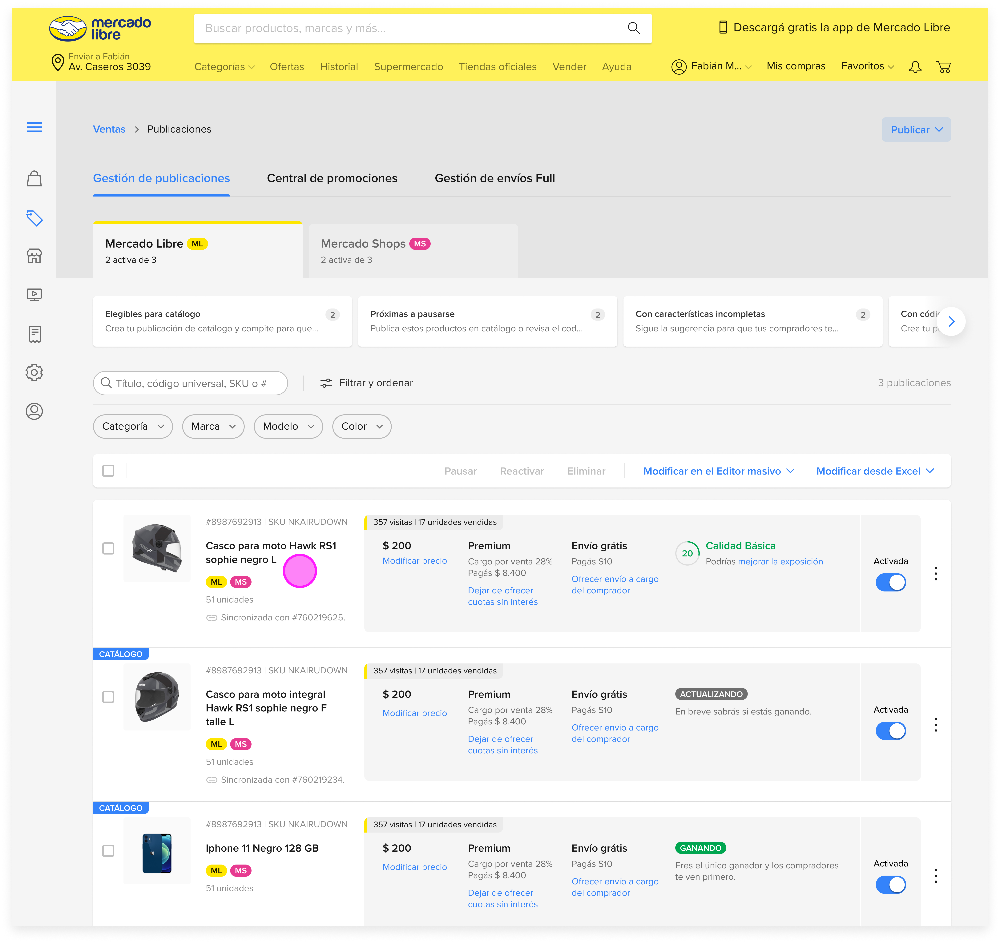

What Is a Non-Productized Listing?
On Mercado Libre, every product sold through a catalog listing competes on a shared product page, a single URL that aggregates all sellers offering that exact item. The seller who wins first place on that page captures the majority of the conversions, similar to Amazon's Buy Box. To compete, a listing must be "productized": linked to an existing catalog entry.
Traditional Listing (Non-productized)
- × Cannot compete for first place / Buy Box
- × Lower organic search visibility
- × Isolated product page, seller carries full SEO burden
- × Marked as "Calidad básica", reduced buyer trust
Catalog Listing (Productized)
- ✓ Eligible to compete for first place
- ✓ Priority placement in search results
- ✓ Shared catalog page with consolidated reviews and SEO
- ✓ Standardized product data, higher buyer confidence
Framing the Problem
Context
A large portion of Mercado Libre sellers have listings that already match products in the catalog, they just don't know it. The opt-in feature existed, but it was buried in secondary menus, unreachable for sellers who had no awareness of the catalog system at all. The listing kept its "Calidad básica" status indefinitely.
Opportunity
Sellers already visit the "Modificar" (edit product) view regularly to update prices, stock, and descriptions. This is the highest-intent screen in the seller workflow. Introducing a catalog matching card here, contextually, at the moment the seller is already engaged with that specific product, creates a zero-discovery-friction entry point.
How Might We
"How might we reduce the activation barrier for catalog enrollment so that sellers with eligible products opt in during their natural edit workflow, without requiring them to seek out the feature themselves?"
Objectives
- Surface the catalog opt-in at the exact moment sellers are already editing their product.
- Guide sellers through catalog matching with enough context to make confident decisions without leaving the flow.
- Convert non-productized listings to catalog-eligible products, unlocking first-place competition for more sellers.
Design Thinking Process
Research showed that sellers rarely navigated to catalog settings proactively, but they visited the edit view constantly. The insight that unlocked the design: sellers don't need a new feature, they need an existing opportunity surfaced at the right moment. The catalog card in Modificar became the bridge between passive awareness and active enrollment.
User Persona
Carlos M.
Independent Seller, Motorcycle Accessories
"I know my prices are competitive, but I still lose sales to sellers I can't even find. I need to understand why."
Goals
- →Increase organic visibility without spending more on ads
- →Understand why some listings underperform compared to competitors
- →Compete for first place on products he already sells well
Pain Points
- !Doesn't know which of his listings are eligible for catalog
- !The catalog opt-in was not visible in the listing or edit view
- !Doesn't understand the difference between traditional and catalog listings
The Productization Flow
The complete enrollment flow begins at the publication listing, where the seller first encounters the problem, and ends with a fully productized listing competing for first place. Every screen was designed to reduce cognitive load: the seller should never feel like they're doing extra work, just confirming what they already know about their own product.
Publication Listing, Problem Detected
publish.jpg
The seller's publication listing shows their motorcycle helmet with "Calidad básica", the platform's signal that this product is not linked to a catalog entry. It cannot compete for first place, receives lower organic traffic, and lacks the consolidated trust signals of a catalog listing. This is the starting point: a product that could be productized, but isn't yet.
Modificar, Catalog Card Surfaces
The entry point to catalog enrollment

When the seller opens the edit view for their listing, a contextual card appears: Mercado Libre has detected that this product may exist in the catalog and invites the seller to search for it. This is the core design intervention, the opt-in is not a separate feature to discover, it's a prompt embedded in the workflow the seller already uses. No navigation required. No awareness gap.
Design decision: Surface the catalog card only when the listing has a plausible catalog match, avoiding noise for sellers whose products genuinely don't exist in the catalog yet.
Catalog Search
Seller searches for their product in the ML catalog

The seller enters their product's name and key characteristics, in this case, a motorcycle helmet. The search experience mirrors a buyer-side search, which sellers already understand. This mental model alignment reduces learning friction: the seller searches their catalog the same way a buyer would search for it.
Catalog Results
Seller selects the catalog entry that matches their product

Search results display catalog products ranked by relevance. Each card shows key product attributes, brand, model, specs, to help sellers confidently identify their item among the results. The seller selects the catalog entry that corresponds to their listing, initiating the matching process.
Product Verification
Side-by-side comparison between the seller's product and the catalog entry

Before committing, the seller sees their product's details alongside the catalog entry's standardized information. This verification step is critical for trust: the seller must confirm the match is accurate. A mismatched productization would cause the seller to inherit incorrect product information, so this screen gives them full control before proceeding.
UX principle applied: Give sellers enough information to make a confident decision without overwhelming them with technical catalog metadata. Show what matters, product name, image, key specs.
Information Review
Final review of product attributes before enrollment

The seller reviews the standardized attributes that will be applied to their listing from the catalog, title, description, technical specs. This is the last opportunity to catch a mismatch before committing. If anything looks wrong, they can go back and search again. The progressive disclosure of information (search → select → verify → review) ensures sellers never feel forced into a decision.
Product Variations
Seller selects the specific variation that matches their stock

For products with variants, size, color, material, the seller specifies which variation their listing represents. This granularity is essential for accurate catalog matching: a black helmet and a white helmet are the same product but different SKUs. Correct variant selection ensures the seller competes on the right catalog page with the right competitors.
Invoice Declaration
The seller indicates whether they offer invoices for this product
Catalog participation on Mercado Libre requires invoice transparency, buyers of certain product categories are entitled to a fiscal receipt. The seller declares whether they offer an invoice, choosing one of two paths. This step directly affects competitive eligibility: invoice-offering sellers gain access to categories and buyers that non-invoice sellers do not.
Path A, Offers Invoice

Path B, No Invoice

Enrollment Confirmed
The listing is now a catalog product

The seller receives a clear success state: their traditional listing has been converted into a catalog product. The feedback screen communicates what changed, what it means for the seller ("now you can compete for first place"), and what they can expect next. This moment, the completion of productization, is the north star the entire flow was designed to reach.
Catalog Listing, Active
The productized listing now competes for first place

The final state: the listing is now enrolled in the Mercado Libre catalog, appearing on the shared product page alongside other sellers. The competition for first place is now open. Pricing, shipping speed, reputation score, and financing options all factor into who wins the top slot, but the critical prerequisite has been met: the seller is now in the game.
Flow Summary
Listado publicaciones
Modificar + card catálogo
Buscador catálogo
Resultados y selección
Verificación
Revisión
Variaciones
Factura
Catálogo activo
Design Impact
Zero extra navigation
To reach catalog enrollment
9 steps
End-to-end with full verification
First place eligible
Outcome for every enrolled seller
Key Design Decisions
Context over navigation
The catalog card appears inside Modificar, the seller's existing workflow, rather than requiring them to find a new menu or setting. Opt-in rate increases when discovery is zero-effort.
Progressive trust
Each step (search → select → verify → review → variations → invoice) gives the seller increasing control and confidence before committing. No irreversible action is taken without multiple checkpoints.